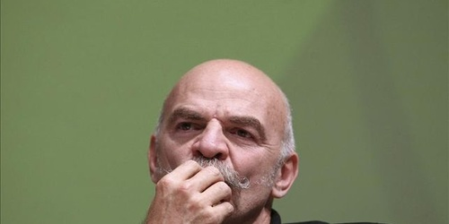

Nota de tapa
Entrevista con Martín Caparrós: "Nos hicieron creer que política es eso que practican estos canallas"

Viajero infatigable, cronista en lugares tan extraños como Sri Lanka o Birmania, Martín Caparrós es un escritor que no se limita a describir geografías conocidas. Sus opiniones también son marcas que deja este presente de confusión y falta de alternativas.